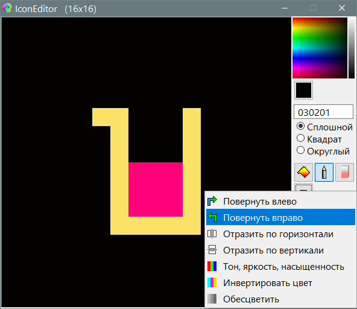

IconEditor
Назначение
Редактор значков.

Работа с программой
- Открыть, редактировать, сохранить.
- При сохранении указывать расширение файла, это определяет в каком формате будет сохранено.
Параметры в файле IconEditor.ini
[set]
color=0031AD - Цвет фона
box=1 - тип квадратиков 1 - сплошной, 2 - с сеткой, 3 скруглённый
Цвет указывается 6-значным шестнадцатеричным числом, при этом сокращённые варианты расшифровываются следующим образом:
"a"="aaaaaa"
"3f"="3f3f3f"
"f80"="ff8800"